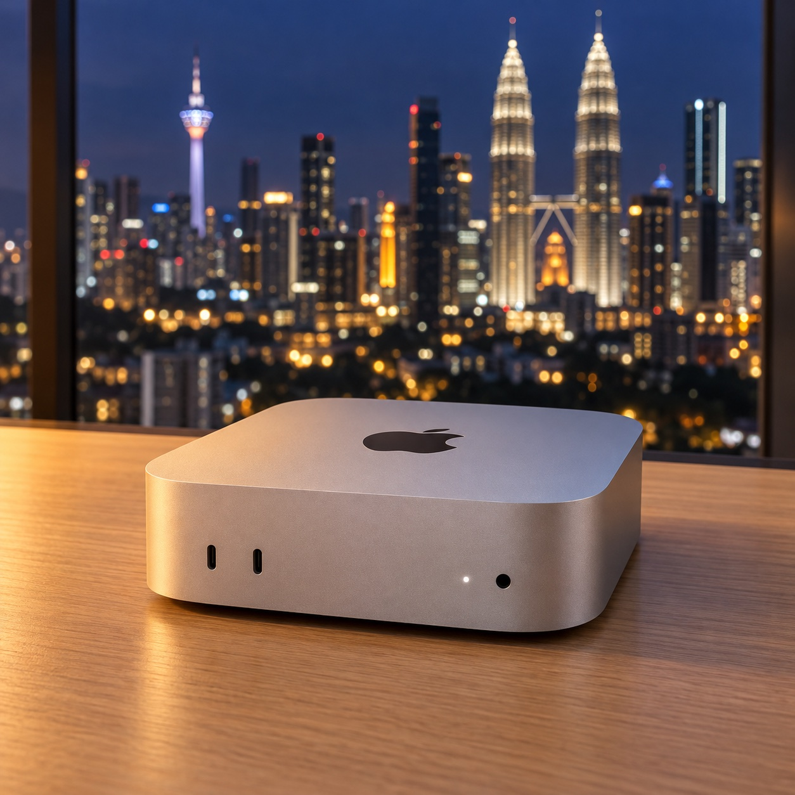
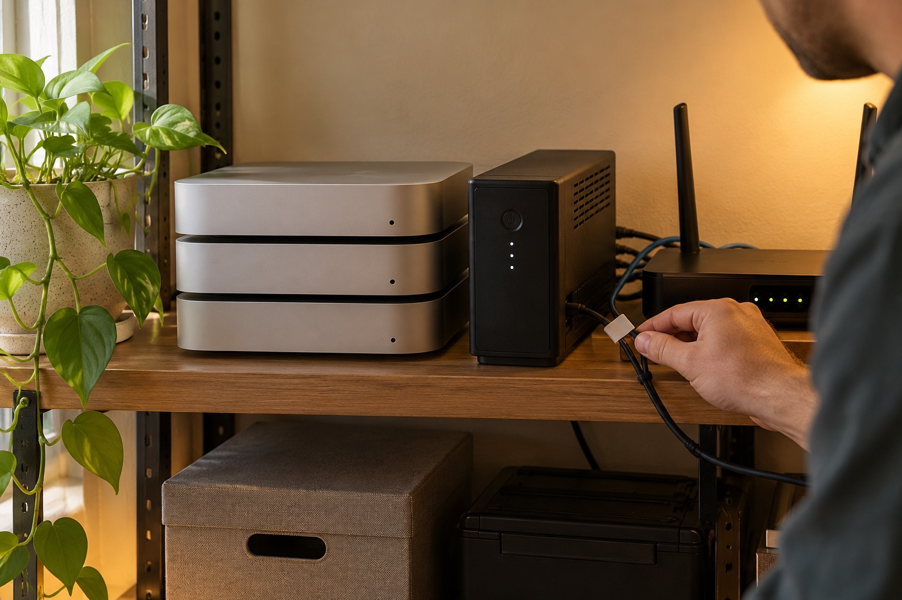

配置与网络
- 城市
- 吉隆坡 · Mont Kiara
- 设备编号
- kl-mini-07
- 系统
- macOS 15
- 芯片
- Apple M4 · 10 核 CPU / 10 核 GPU
- 内存
- 16 GB
- 硬盘
- 512 GB SSD
- 网络
- 家庭光纤 500M
- 上行
- 约 100 Mbps
- IP
- 住宅 IP · 租期内固定待确认
- 出口 IP
- 独享，不和其他机器共用
- 供电
- UPS · 来电自动开机
- 交付
- 付款后 2 小时内待确认
数据为示例；正式上线后以设备页实测为准。
从你的城市连过去
到吉隆坡 kl-mini-07
最近 7 天 · RTT 中位数深圳≈ 40 ms
广州≈ 45 ms
杭州≈ 66 ms
上海≈ 70 ms
成都≈ 76 ms
北京≈ 86 ms
吉隆坡现在--:--
SSH / mosh 在 100 ms 以内很流畅，远程桌面建议在 80 ms 以内。付款前可以申请一次连接测试。
连接方式与预装工具
UU 远程UU 终端SSH / moshVS Code WebCloudflare 固定地址 待确认
HomebrewGitNode.jsPythonXcode CLIDockertmuxmoshnanoMuse（可选）
Tailscale、ToDesk、RustDesk 可以进入桌面后自己装。每种方式适合做什么
运维与保障

当地运维
机器出了问题，
有人到现场处理。
- 断电恢复来电自启 · UPS
- 远程重启随时申请
- 定期巡检温度 · 磁盘 · 网络
- 硬件故障当地更换
付款与租期
下单前，
先看看怎么付、怎么退。
付款后多久能用上？待确认
官方自营的现货设备，付款后 2 小时内把连接信息发到你的邮箱。第三方设备以设备页标注的交付时间为准。
怎么付款？能开发票吗？
在线下单付款，支持按月、季、年付，可用的付款方式以付款页为准。需要发票或报销凭证的，请在下单前说明。
怎么续租、停用？能退款吗？待确认
到期前可以一键续租；不续租的话到期自动停用，没有押金。交付后如果因为我们的原因无法正常使用，可以申请全额退款，其他情况以服务条款为准。
租到一半想升级配置可以吗？待确认
可以。差价按剩余天数计算，数据迁移由我们协助完成。